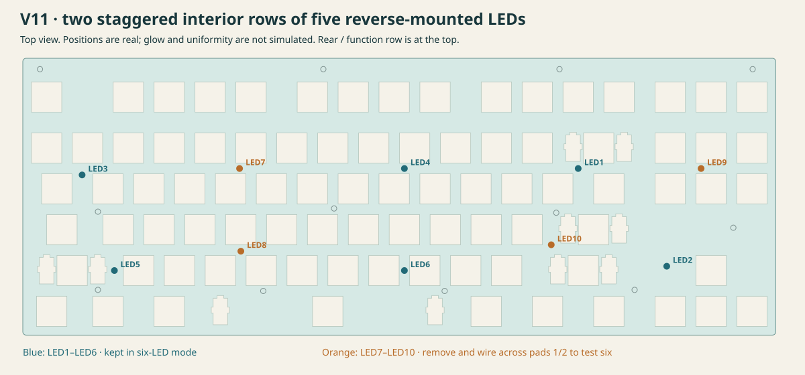
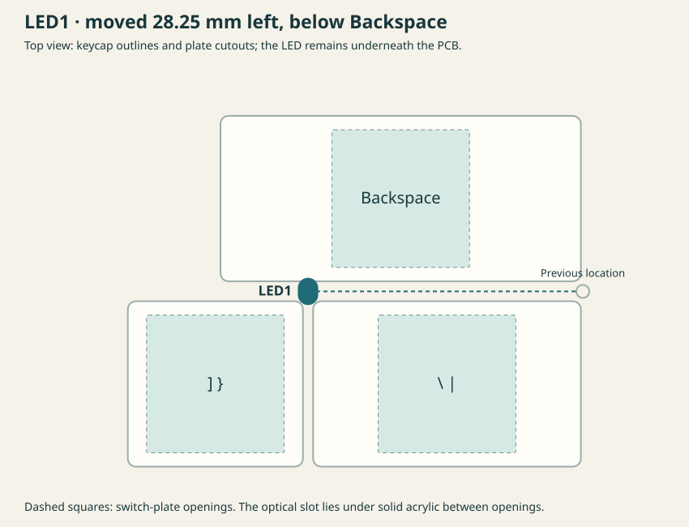

V11: two staggered rows of five LEDs
Reverse-mounted LEDs shine through the PCB into the acrylic switch plate. All factory components remain on the bottom; v10 is preserved. LED type, count and maximum current are unchanged.
The locations follow the shared placement guidance: five interior lighting zones in each row, using solid acrylic between the switch cutouts.

LED1 stays below Backspace between the right bracket and backslash/pipe keys. Eight other LEDs move; LED6 retains its position. LED10 is offset around the existing bottom-case support.

The acrylic pattern is an optical/fit trial with optional entry marks. Optical couplers and an extraction pattern still need physical trials; relocation alone does not establish brightness or uniformity. The latest hidden-mount case upper integrates its original plate, so a flat acrylic sheet still needs a compatible retention design. This is a prototype PCB, not hardware-tested production.